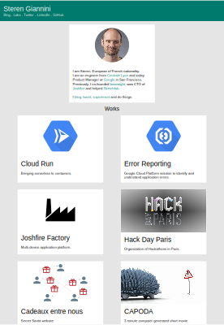

Screenshot as SVG
We often need to embed screenshots of web apps in product pages or documentation. If the screenshot resolution is not high enough, this can result to blurry images, notably on high density screens. Using .png file leads to crisp results but heavy files compared to a vector graphic. And lastly, wouldn’t it be cool if the text on the screenshot could be selected? or the screenshot able to adapt to high zoom levels?
Since these days webpages and user interfaces have stopped using textures in favor of flat design and vector-based icons and texts, saving screenshots into a vector graphic format like SVG would be perfect.
So I started looking for a tool that would capture screenshots as SVG. I couldn’t find anything, and indeed, that’s a hard problem to solve: the tool needs to have knowledge of the structure of what’s on screen in order to generate the SVG structure.
But then I realized: Isn’t what Chrome does when it prints to PDF? And then, we can simply convert this PDF into an SVG using Inkscape. And indeed, this workflow works quite well:
- In Chrome, print the current page and select “Save as PDF”. Make sure to check the “Background graphics” option, in order to capture the background colors. Adjust the paper size and scale for a proper size (I recommend using an A3 paper in portrait)
- Open the saved PDF using Inkcape. Pick the default importer if you want to
- Optionally, adjust the viewport and delete unwanted elements
- Save the file as SVG.
- Profit
These manual steps work great, but are a few steps too much. So I wrote a web service that given an URL, returns its SVG screenshot.
The code uses the same tool as described above: Chrome, manipulated via Puppeteer and Inkscape, executed via its command line. I needed to add a few line of code to handle the incoming request and orchestrate all this. I picked Node.js. And then packaged it all into a Docker container, making sure fonts and all needed OS packages were installed in it. The container is deployed to Cloud Run as an automatically scales web service. I am paying only when it s processing requests, and I do not have to worry of scaling it up and down to handle the load.
Give it a try at https://html-to-svg.as-a-service.dev/, pass the URL to screenshot as a parameter, for example: https://html-to-svg.as-a-service.dev/?url=https://steren.fr
And as always, the code is on GitHub
Here is an example of my website steren.fr captured as SVG:
